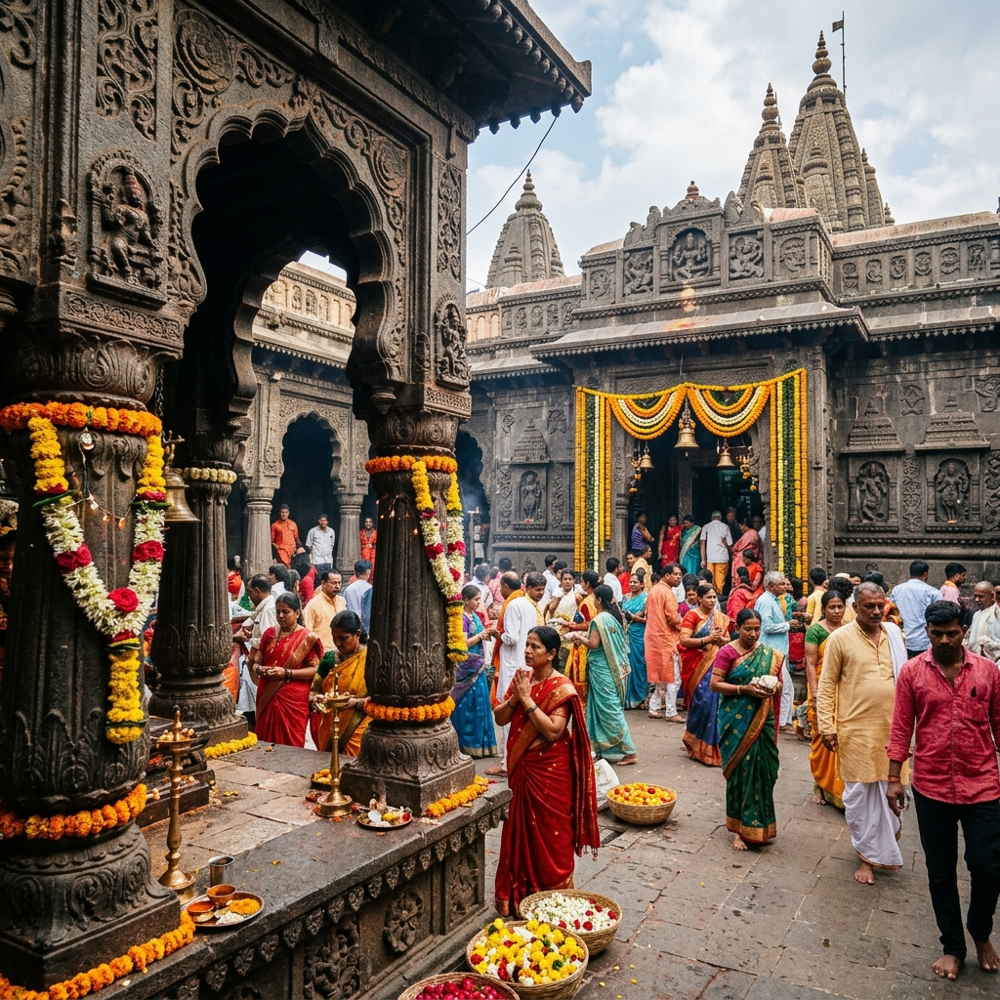
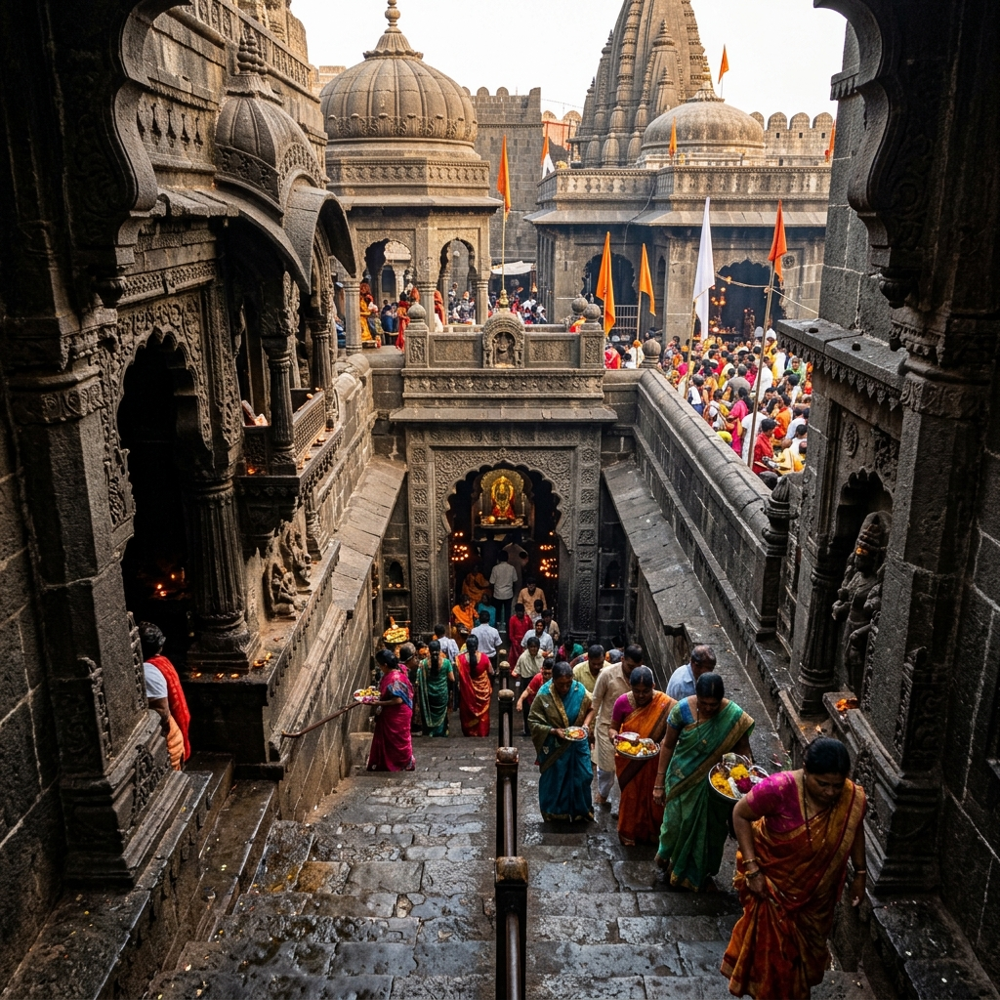
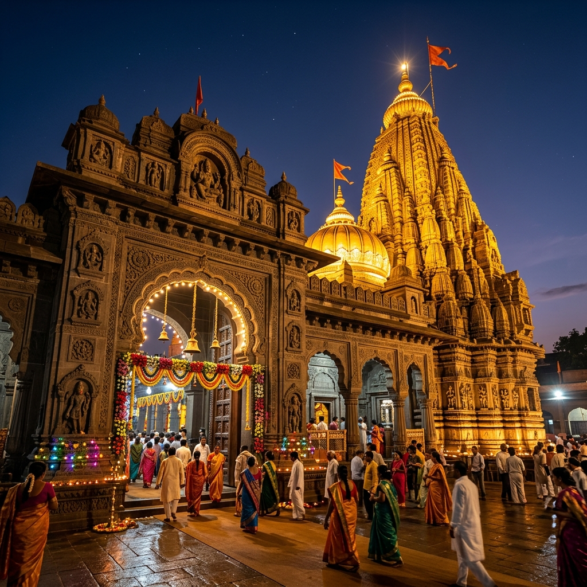

About Temple
Visiting Tulja Bhavani Temple feels powerful and deeply emotional, especially if you are drawn towards goddess temples. The moment you enter the temple complex, there is a strong sense of devotion and energy that you can actually feel. It is not a quiet or slow place – it carries a vibrant spiritual intensity where people come with strong faith and belief. Many devotees visit to seek strength, protection, and courage, making the experience feel more personal and meaningful.
Vibrant Devotion
Feel the Energy
Inner Strength
Seeking Courage

History & Significance
Tulja Bhavani Temple is dedicated to Goddess Bhavani, who is considered a fierce and protective form of Durga. The temple holds great historical importance as it is believed to be the kuldevi (family deity) of Chhatrapati Shivaji Maharaj. According to belief, the goddess blessed him with a sword, symbolizing strength and victory. The temple has been a major spiritual center for centuries and continues to hold deep cultural importance in Maharashtra.
Royal Link
Chhatrapati Shivaji Maharaj
Bhavani Sword
Strength & Victory
What Makes It Unique
Discover the unique factors that set Tulja Bhavani Temple apart from other shrines.


Travel Guide
Convenient ways to reach the temple from different parts of Maharashtra.
Option 1: Direct Car/Cab
Tuljapur is well connected by road. From Pune, it takes around 5–6 hours by car, and from Mumbai around 8–9 hours via national highways.
Duration: 45 min from SolapurOption 2: Railways
The nearest railway station is Solapur (45 km away), which is well-connected to major cities. Taxis and buses are readily available from Solapur to Tuljapur.
Nearest Junction: Solapur StationOption 3: ST & Private Buses
Regular state transport (MSRTC) and private luxury sleeper buses run daily from Pune, Mumbai, Solapur, and other major towns in Maharashtra directly to Tuljapur.
Essential Information
Important details regarding timings, queues, and ideal visiting slots.
Timings & Crowds
Opens at 5:00 AM and closes around 9:00 PM. Early morning is ideal to beat the heavy crowds. Weekends and festival days get extremely packed.
Entry & Darshan
General entry is free. There are no fees for general darshan, although paid quick darshan options or special pooja slots may be booked.
Best Time to Visit
October to March is ideal for comfortable weather. Navratri is highly vibrant but brings massive crowds; avoid peak days if seeking peace.
Location & Coordinates
Tulja Bhavani Temple, Tuljapur Town, Dharashiv District (Osmanabad), Maharashtra 413601